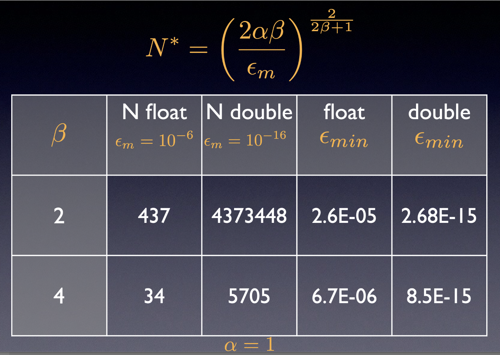

Numerical errors II : types of errors and general remarks#
In this notebook we will check several simple examples showing the intrincacies that could arise when using floating point (FP) arithmetic. Before starting, let’s make clear some key ideas:
FP is well defined through the IEEE754 standard.
A simple substraction could destroy 15 decimal places of precision
You should not cast floats to integers
You should normalize your models to natural units
Addition is not always associative: \(x + (y + z) \ne (x+y) + z\), when \(x = -1.5\times 10^{38}, y = +1.5\times 10^{38}, z = 1.0\) (single precision)
All numbers can be represented in binary: false. Check 0.1, or 0.3
For some dramatic examples of FP errors, check:
https://www.iro.umontreal.ca/~mignotte/IFT2425/Disasters.html
https://web.ma.utexas.edu/users/arbogast/misc/disasters.html
https://slate.com/technology/2019/10/round-floor-software-errors-stock-market-battlefield.html
https://stackoverflow.com/questions/2732845/real-life-example-fo-floating-point-error
Kind of errors#
Probability of an error:
start\(\to U_1 \to U_2 \to \ldots \to U_n \to\)endBlunders: Typographical, wrong program, etc
Random errors: Electronics, alien invasion, etc
Approximation: (mathematical series truncation)
Roundoff and truncation of a number in the computer representation
Roundoff/truncation example#
Let’s compute the following sum as a function of \(k\),
Mathematically, this function should give 0 always. Is that true?
%matplotlib inline
import numpy as np
import matplotlib.pyplot as plt
def plot_diff(kmax):
"""
This function computes and plot the function f(k), up to a kmax
"""
# YOUR CODE HERE
raise NotImplementedError()
plot_diff(100000)
---------------------------------------------------------------------------
NotImplementedError Traceback (most recent call last)
Cell In[1], line 11
8 # YOUR CODE HERE
9 raise NotImplementedError()
---> 11 plot_diff(100000)
Cell In[1], line 9, in plot_diff(kmax)
5 """
6 This function computes and plot the function f(k), up to a kmax
7 """
8 # YOUR CODE HERE
----> 9 raise NotImplementedError()
NotImplementedError:
{kind=link}
Substractive cancellation#
Given \(a = b-c\), then \(a_c = b_c-c_c\), therefore
so the error in \(a\) is about $\(\epsilon_a = \frac{b}{a}(\epsilon_b - \epsilon_c), \)\( which is much larger, when \)b\( and \)c\( are close (so \)a$ is small).
Example of substrative cancellation#
The following series,
can be written in two mathematically equivalent ways:
and
Could there be any computational difference? why?
Write a program that compute all sums, and , assuming that \(S_n^{(3)}\) is the best option (why?), plots the relative difference with the other sums as a function of \(N\).
# Substracting cancellation
import numpy as np
import matplotlib.pyplot as plt
%matplotlib inline
def sum1(N):
# YOUR CODE HERE
raise NotImplementedError()
def sum2(N):
# YOUR CODE HERE
raise NotImplementedError()
def sum3(N):
# YOUR CODE HERE
raise NotImplementedError()
def plot_diff_sums(N):
"""
Plots the relative difference among three sums which are the same mathematically
"""
adata = np.zeros(N+1)
bdata = np.zeros(N+1)
for n in range(1, N+1):
#print n, sum1(n), sum2(n), sum3(n)
#adata[n] = sum1(n)
#bdata[n] = sum3(n)
adata[n] = abs((sum1(n) - sum3(n))/sum3(n))
bdata[n] = abs((sum2(n) - sum3(n))/sum3(n))
fig, axes = plt.subplots()
axes.plot(adata, "o-", ms=6.0, label="%sum1")
axes.plot(bdata, "g*--", ms = 9.0, label="%sum2")
axes.set_xscale("log")
axes.set_yscale("log")
axes.legend(loc=2)
plot_diff_sums(1000)

Significant figures and relative precision#
Even simple cases like changing a sum order can give surprising results: Compute the following two sums and plot their relative difference as functions of \(N\),
import numpy as np
import matplotlib.pyplot as plt
%matplotlib inline
# Significant figures
def plot_sum_sigfig(NMAX):
xdata = np.arange(1, NMAX+1)
ydata = np.zeros(NMAX)
sumup = 0.0
sumdown = 0.0
# YOUR CODE HERE
raise NotImplementedError()
plot_sum_sigfig(100000)
Multiplicative errors#
When you multiply numbers, like in the expression \(a = b\times c\), it is possible to show that the error is $\(1 + \epsilon_a + \epsilon_b\)$
Errors in algorithms and their computational implementation#
As you can see, there are several source for errors in computation. Some come from the mathematical approximation, , called \(\epsilon_a\), and some others are intrinsic from the numerical representation, and we can call them \(\epsilon_r\). Sometimes, the rounding/truncation error are modeled as a random walk, \(\epsilon_r \simeq \sqrt{N} \epsilon_m\), where \(\epsilon_m\) is the machine precision, and \(N\) is the representative number of “steps”. From here, the total error can be estimated as
You can derive this equation an compute the optimal value for \(N\), which will depend on the order of the mathematical algorithm and the machine precision. The next table show some examples that illustrate this point:
{kind=link}